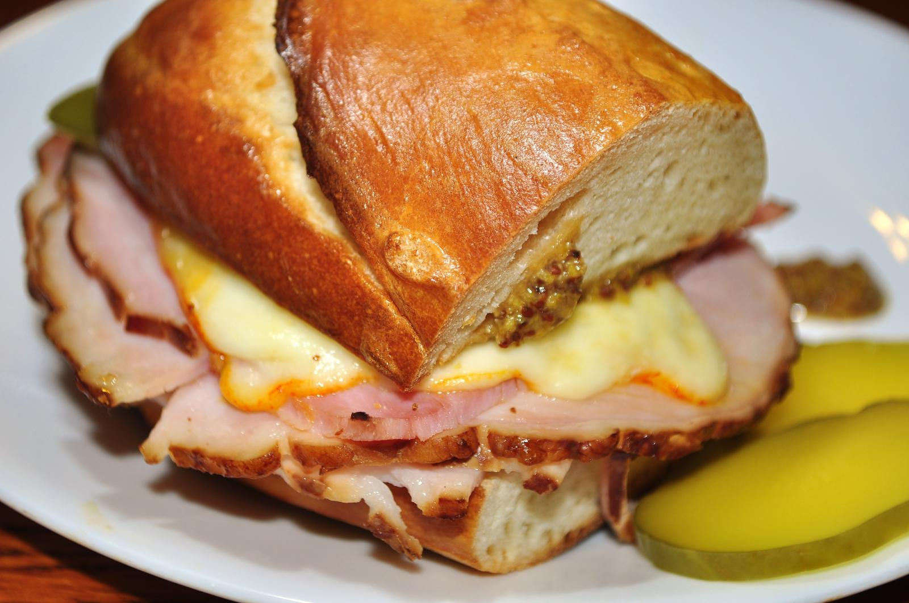

Ham Sandwich

Description
I didn't like making sandwiches for a while and thought they made a fairly boring lunch until I got into ham sandwiches. Using nice ingredients will improve the sandwich but you don't need anything that fancy.
Ingredients
- Bread, 2 slices
- Butter (or pesto, mustard, or similar), 1 knifesworth
- Ham, 1 slice
- 1 tomato or half a cucumber, sliced
Steps
- Add butter, pesto, mustard, or similar to one side of one slice of bread.
- Add ham so it lays flat, covering the buttered side of the bread.
- Add the cucumber or tomato.
- Add the other slice of bread.
- Cut in half diagonally if using square slices of bread.
Home